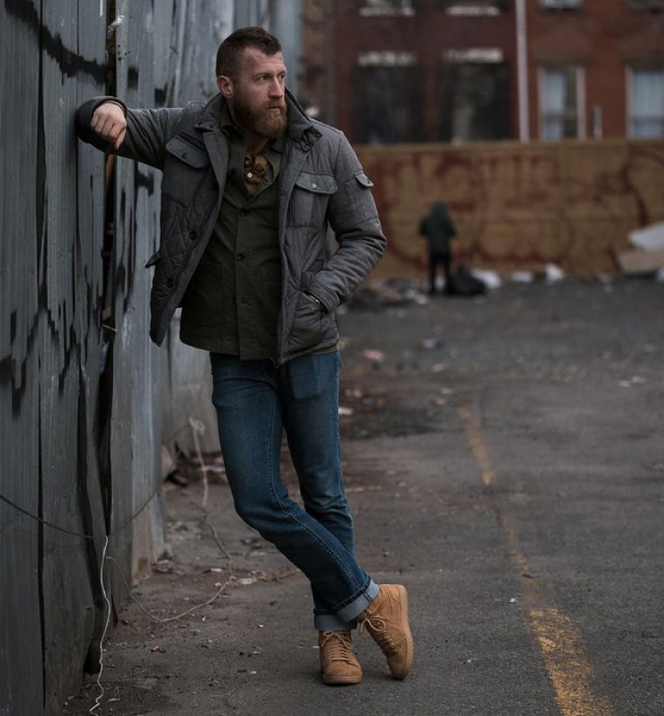
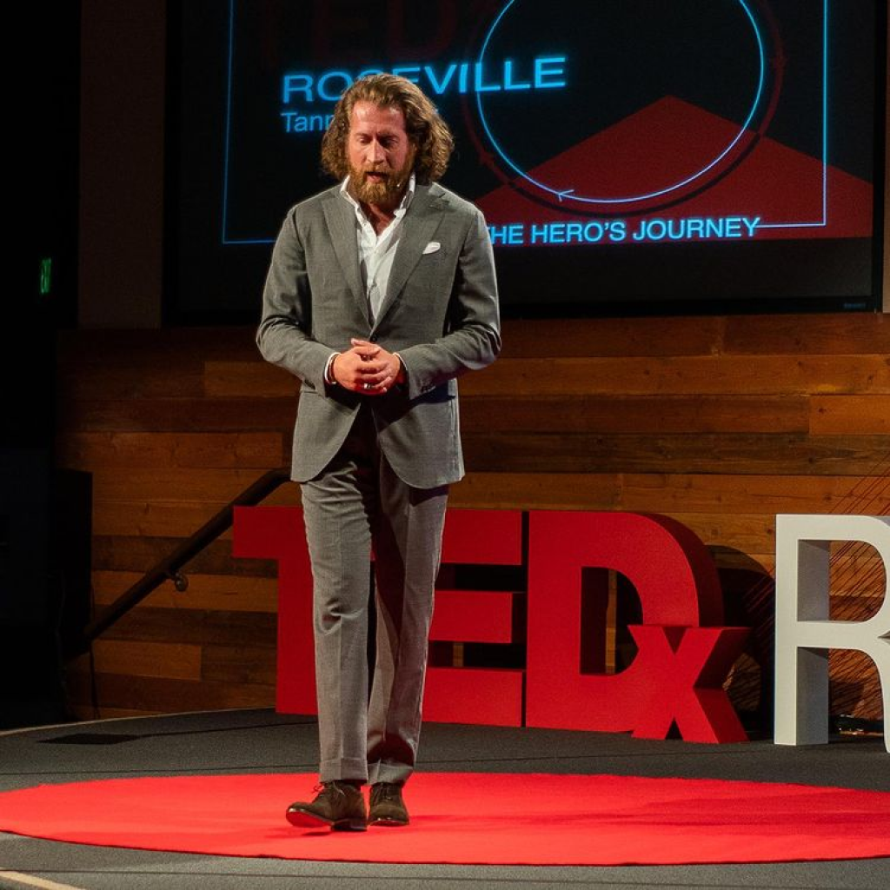

So many men are missing out on the unbelievable benefits that come from looking and feeling their best. While other coaches and stylists may walk you around the mall and tell you what to wear like some baggy girlfriend or worse, your mom, I take a very different approach. I teach you the three key factors of style, and ultimately, how to implement them yourself. My clients don’t need my help shopping because they know what they’re doing. They don’t spend any more time getting dressed each morning than the average man but look infinitely better because they’ve mastered this ability and can express themselves through their clothing as effortlessly and masterfully as you can by typing out an email or speaking on the phone.
Everything I teach my coaching clients and outline in my book come from a set of principles that translate into other aspects of life as well. By learning the fundamentals of communication through clothing, we learn how to better communicate in every other way. I love sharing that message in live conferences and trainings and have received overwhelmingly positive responses from those I’ve spoken to at events such as 21Con, TEDx, Menfluential and many more. While my coaching focuses primarily on men, the principles of communicating with our appearance are equally as applicable to women and these skills are crucial at work, at home, and anywhere else. I would love to talk about bringing my message to your upcoming event.
